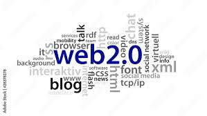

Web 2.0 refers to the second generation of the World Wide Web, emerging around the mid-2000s. Unlike Web 1.0, it shifted the web from a read-only experience to a read-write platform where users could actively create, share, and interact with content.
Web 2.0 was made possible by advances in technologies such as JavaScript, Ajax, and APIs which allowed web pages to update dynamically without needing to reload. This enabled features like comment sections, live feeds, user profiles, and real-time collaboration. Platforms like YouTube, Facebook, Twitter, Wikipedia, and Google Maps are all products of Web 2.0 — they rely on users generating and sharing content to function.
Web 2.0 completely transformed how people use the Internet. It gave rise to social media, blogging, online shopping, cloud services, and user-generated content at a massive scale. The web was no longer just a library to read from — it became a platform where anyone could publish, connect, and participate. This is the web that most people alive today grew up with and continue to use daily.